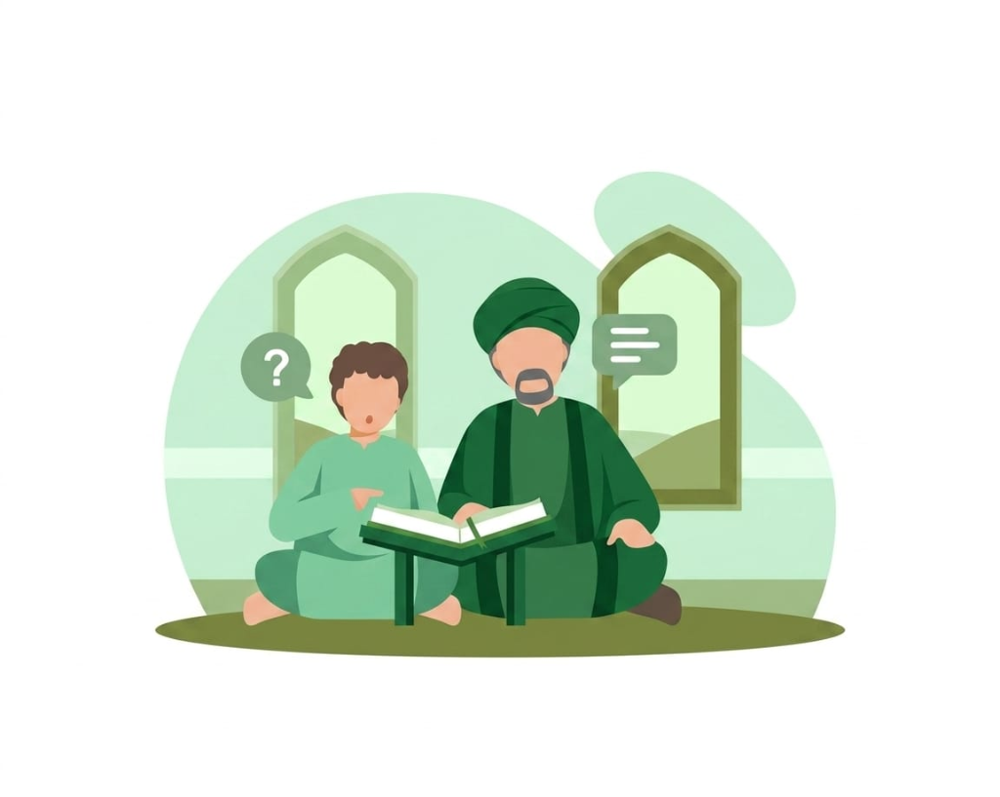
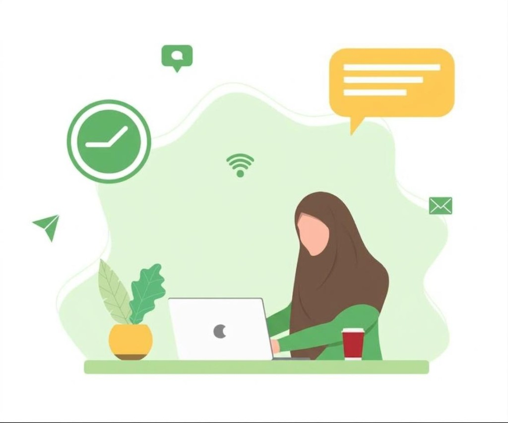
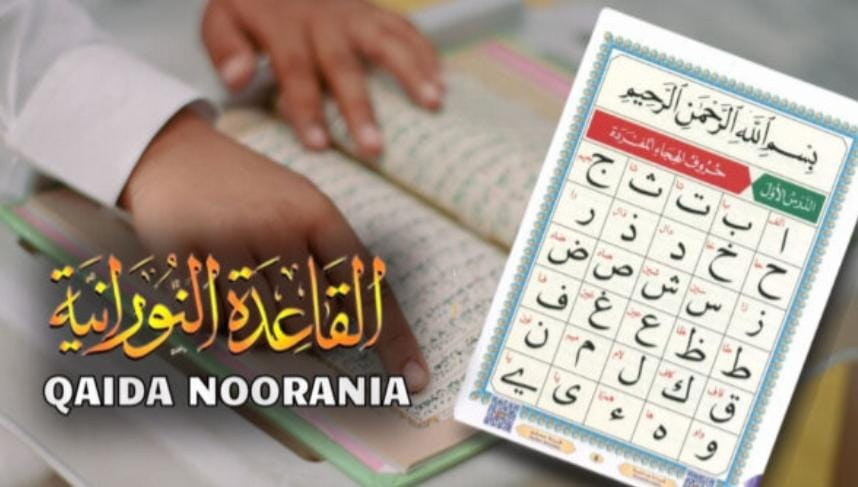

دورات التفسير أونلاين: فهم القرآن الذي تتلوه
افهم القرآن الذي تتلوه من خلال دراسة تفسير موجهة وعملية تناسب المتعلمين الكبار.
اقرأ المقالمقالات Blessings Academy
هذه المقالات موجهة للأسر المسلمة، والطلاب الكبار، وأولياء الأمور الذين يبحثون عن توجيه عملي وإيماني في تعلم القرآن أونلاين.
افهم القرآن الذي تتلوه من خلال دراسة تفسير موجهة وعملية تناسب المتعلمين الكبار.
اقرأ المقال
اتبع طريقًا واضحًا في دراسة السيرة وحوّل الاقتداء بالنبي ﷺ إلى تأمل عملي.
اقرأ المقال
ابدأ دراسة الحديث بعناية وسياق وشرح مؤهل وتأمل عملي.
اقرأ المقال
علّم العقيدة في مراحل مناسبة تساعد الطفل على الفهم والسؤال والتذكر والتطبيق.
اقرأ المقال
تعرف على مدد حفظ القرآن الواقعية والعادات التي أهم من أي وعد زمني.
اقرأ المقال
دليل مطمئن للكبار الذين يريدون بدء تعلم القرآن أو استئنافه بثقة.
اقرأ المقال
تعرف على أخطاء التجويد المتكررة وابنِ روتينًا عمليًا لتصحيح التلاوة.
اقرأ المقال
استعد بخطة متوازنة للقراءة والحفظ والتدبر حتى يبقى الروتين واقعيًا.
اقرأ المقال
قائمة عملية للأسر في الخارج لمقارنة التوقيت والمعلم واللغة والأهداف والاستمرار.
اقرأ المقالاستخدم أهدافًا واقعية وتشجيعًا وممارسة نشطة ودعم الوالدين لإبقاء الطفل متفاعلًا.
اقرأ المقالخطوات عملية لبناء علاقة محبة بين الطفل والقرآن من خلال الرحمة، والروتين الهادئ، والتشجيع المستمر.
اقرأ المقال
التجويد ليس مجرد تحسين للصوت، بل هو حفظ لكلام الله من الخطأ وتدريب على التلاوة الصحيحة باحترام وخشوع.
اقرأ المقال
ابدأ العربية بالترتيب الصحيح حتى تبني فهمًا حقيقيًا لمفردات القرآن وتراكيبه دون تشتت أو استعجال.
اقرأ المقال
تعرف على ما ينبغي أن يتوقعه المبتدئ في أول درس قرآن أونلاين من تقييم المستوى إلى خطة تعلم واضحة ومناسبة.
اقرأ المقالاكتشف لماذا تساعد الدروس الفردية في تحسين التركيز، وسرعة التصحيح، وبناء الثقة، وتنظيم الجدول بمرونة.
اقرأ المقال
ابنِ روتينًا واقعيًا للحفظ والمراجعة يساعدك على الثبات وتجنب الانقطاع والإرهاق.
اقرأ المقال
تعرف على أهم الصفات التي ينبغي البحث عنها في معلم القرآن أونلاين من الإتقان إلى حسن الأسلوب والالتزام.
اقرأ المقال
اكتشف كيف تساعد القاعدة النورانية في بناء النطق الصحيح ومعرفة الحروف والثقة قبل قراءة المصحف مباشرة.
اقرأ المقال
خطوات بسيطة لبناء عادة يومية مع القرآن تشمل القراءة والمراجعة والتدبر بطريقة واقعية ومستدامة.
اقرأ المقال
تساعد الدراسات الإسلامية المنظمة الطفل على فهم إيمانه وربط المعرفة بالأخلاق والهوية والمواقف اليومية.
اقرأ المقال
تمنح المراجعة المنتظمة التلاوة فرصة للتصحيح الهادئ وتكشف الأخطاء التي قد لا يلاحظها القارئ.
اقرأ المقال
تلاوة القرآن بالعربية وفهمه تجربتان متصلتان، ويساعد النحو على كشف وظيفة الكلمات ودقة المعنى في السياق.
اقرأ المقال